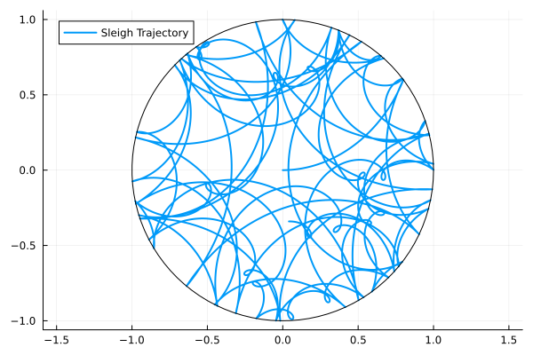

A Nonholonomic Example
The Chaplygin sleigh
\[ M(q) = \begin{bmatrix} m & 0 & -ma\sin\theta \\ 0 & m & ma\cos\theta \\ -ma\sin\theta & ma\cos\theta & I+ma^2 \end{bmatrix}\]
\[ A(q) = \begin{bmatrix} -\sin\theta & \cos\theta & 0 \end{bmatrix}\]
\[ h(x,y) = 1 - (x^2+y^2) \geq 0.\]
import HybridDynamics as HD
import Plots as plt
using LaTeXStrings
a = 0.2
M_sleigh(q) = [1.0 0.0 -a*sin(q[3]);
0.0 1.0 a*cos(q[3]);
-a*sin(q[3]) a*cos(q[3]) 1+a^2]
V_sleigh(q) = 0.0
A_sleigh(q) = [-sin(q[3]) cos(q[3]) 0.0]
h_sleigh(q) = 1 - (q[1]^2+q[2]^2)
∇h_sleigh(q) = [-2*q[1], -2*q[2], 0.0]
sysNH = HD.NonholonomicSystem(M_sleigh, V_sleigh; A = A_sleigh, guard=h_sleigh, normal=∇h_sleigh, e=1)
probNH = HD.prob(sysNH, [0.0, 0.0, 0.0, 1.0, 0.0, 1.5], (0.0, 100.0))
solNH = HD.solve(probNH, solver=HD.RK4())HybridDynamics.NonholonomicSol{Vector{Float64}, Vector{Vector{Float64}}, Vector{Vector{Float64}}, prob{NonholonomicSystem{typeof(Main.M_sleigh), typeof(Main.V_sleigh), typeof(Main.A_sleigh), typeof(Main.h_sleigh), typeof(Main.∇h_sleigh), HybridDynamics.var"#NonholonomicSystem##2#NonholonomicSystem##3", Int64}, Vector{Float64}, Tuple{Float64, Float64}}, Vector{Float64}, Vector{Int64}, Vector{Float64}}([0.0, 0.01, 0.02, 0.03, 0.04, 0.05, 0.060000000000000005, 0.07, 0.08, 0.09 … 99.91675166534371, 99.92675166534372, 99.93675166534372, 99.94675166534373, 99.95675166534373, 99.96675166534374, 99.97675166534374, 99.98675166534375, 99.99675166534375, 100.0], [[0.0, 0.0, 0.0, 1.0, 0.27817403708987165, 1.4465049928673324], [0.010018983636744867, 7.245844298870329e-5, 0.013894784519271697, 0.9999032202947593, 0.2920952260533292, 1.4437206653965065], [0.02007448479506459, 0.0002903541216995301, 0.027761700080071082, 0.9996126849403033, 0.30603934663127486, 1.4409312136469106], [0.030164321272290802, 0.0006544395494812641, 0.04160069581367704, 0.9991281412854043, 0.32000333712575785, 1.43813671241132], [0.04028630134456155, 0.0011654298580691703, 0.055411721598673816, 0.9984493920505401, 0.33398413966328405, 1.4353372363574595], [0.05043822448314559, 0.001824002758788768, 0.06919472805968344, 0.9975762950045873, 0.34797870126499447, 1.4325328600246057], [0.06061788206777484, 0.00263079851807779, 0.08294966656606445, 0.9965087626208284, 0.3619839749036187, 1.4297236578202182], [0.07082305809670301, 0.00358641994716934, 0.09667648923057698, 0.9952467617127191, 0.37599692054683176, 1.4269097040166], [0.08105152989321432, 0.004691432405774144, 0.11037514890801457, 0.993790313049869, 0.39001450618665756, 1.4240910727475857], [0.09130106880831164, 0.005946363819594862, 0.1240455991938031, 0.9921394909546929, 0.40403370885457596, 1.4212678380052612] … [0.07549895485250664, -0.342413263850295, 153.9489509108155, -0.38991880556653036, -0.2824451248367405, 1.750476161414535], [0.07153465346018745, -0.34188346754377846, 153.9658926391437, -0.3897888906620498, -0.2891414196721521, 1.7491366344037338], [0.06751496946171454, -0.3414252819817414, 153.98282089773832, -0.38954289622761423, -0.29590892635574356, 1.7477822230169135], [0.06344124917231929, -0.3410404021775265, 153.999735538006, -0.38917847989431215, -0.3027453670646829, 1.7464129774100758], [0.05931488013055607, -0.3407304944758568, 154.01663641185732, -0.3886933518128362, -0.30964840483176176, 1.7450289482263137], [0.055137290402442245, -0.3404971956233131, 154.03352337171177, -0.3880852760389934, -0.3166156449059789, 1.7436301865919073], [0.05090994786504164, -0.34034211185723484, 154.05039627050243, -0.3873520718814966, -0.3236446361448096, 1.7422167441123904], [0.04663435947000627, -0.3402668180134964, 154.0672549616809, -0.38649161521132525, -0.3307328724370666, 1.740788672868586], [0.04231207048759889, -0.3402728566535993, 154.0840992992219, -0.3855018397319719, -0.3378777941552454, 1.7393460254126134], [0.04089826046351445, -0.3402925715780322, 154.08956779093907, -0.38515216495395915, -0.34021046707864483, 1.7388742776290385]], [[1.0037605269516297, 0.014504853110996946, 1.3880858579795077, -0.019361078981465715, 1.3933165322644059, -0.27869020868775674], [1.00730333364263, 0.029086824983276027, 1.3852964062308815, -0.03875020192180186, 1.3954565540570618, -0.27919889486957417], [1.0106274320448592, 0.04374217987638904, 1.382501904996255, -0.05816181618572851, 1.3972905793327415, -0.27970010796952166], [1.0137319059026624, 0.05846717744925417, 1.3797024289433528, -0.07759040041955634, 1.3988190442632997, -0.280193860663003], [1.0166159104479666, 0.07325807419964922, 1.3768980526114512, -0.09703046664199459, 1.4000424913834855, -0.280680165963756], [1.0192786720869043, 0.08811112488826764, 1.37408885040801, -0.11647656229052031, 1.4009615682496264, -0.2811590372209629], [1.0217194880585312, 0.10302258394681665, 1.3712748966053323, -0.13592327222277117, 1.4015770260619114, -0.28163048811634717], [1.0239377260662066, 0.11798870686965596, 1.3684562653372527, -0.1553652206724653, 1.4018897182516556, -0.28209453266125595], [1.0259328238822152, 0.1330057515884912, 1.365633030595857, -0.17479707315938792, 1.4019005990349027, -0.2825511851937279], [1.0277042889262191, 0.14806997982965608, 1.3628052662282288, -0.19421353835302776, 1.4016107219337648, -0.2830004603755474] … [-0.39361717597761464, 0.05650296947821612, 1.6948413538104259, 0.007266877380656233, -0.6659944694592576, -0.13320682277679077], [-0.39922136126533947, 0.049427577717451904, 1.6935018268006357, 0.018755996664907456, -0.673227540583672, -0.13469775184630714], [-0.40469299886735677, 0.042181282626725186, 1.6921474154148342, 0.030481931708887543, -0.6802358311826121, -0.13618368979953574], [-0.41002793235621027, 0.03476690398949567, 1.6907781698090252, 0.04243950106646324, -0.6870133598723871, -0.13766458773321727], [-0.41522207384575427, 0.027187355447040568, 1.6893941406262976, 0.05462338287914859, -0.693554279707394, -0.13914039713291093], [-0.420271406072174, 0.01944564267940674, 1.6879953789929347, 0.06702811861126258, -0.6998528814028064, -0.14061106987607708], [-0.4251719844240188, 0.011544861540233708, 1.6865819365144676, 0.07964811685783944, -0.7059035964486231, -0.14207655823507276], [-0.4299199389204586, 0.003488196146922584, 1.685153865271721, 0.09247765722252148, -0.7117010001137754, -0.14353681488012954], [-0.43451147613659497, -0.004721083072347171, 1.6837112178168134, 0.10551089426172101, -0.7172398143385235, -0.14499179288225494], [-0.4359686822628621, -0.0074200133277816105, 1.6832394700332411, 0.10978736470153665, -0.7189825050984907, -0.1454632748271273]], prob{NonholonomicSystem{typeof(Main.M_sleigh), typeof(Main.V_sleigh), typeof(Main.A_sleigh), typeof(Main.h_sleigh), typeof(Main.∇h_sleigh), HybridDynamics.var"#NonholonomicSystem##2#NonholonomicSystem##3", Int64}, Vector{Float64}, Tuple{Float64, Float64}}(NonholonomicSystem{typeof(Main.M_sleigh), typeof(Main.V_sleigh), typeof(Main.A_sleigh), typeof(Main.h_sleigh), typeof(Main.∇h_sleigh), HybridDynamics.var"#NonholonomicSystem##2#NonholonomicSystem##3", Int64}(Main.M_sleigh, Main.V_sleigh, Main.A_sleigh, Main.h_sleigh, Main.∇h_sleigh, HybridDynamics.var"#NonholonomicSystem##2#NonholonomicSystem##3"(), 1, -1), [0.0, 0.0, 0.0, 1.0, 0.0, 1.5], (0.0, 100.0)), [0.9099007465233478, 1.8593061104467228, 3.315415235448329, 4.649646160850345, 5.708683756216081, 8.314587291046026, 12.552344871267, 13.41434663816718, 15.037719943492398, 16.333797863744827 … 75.7312034355662, 79.32679203662416, 80.61069037323061, 82.03186865579622, 85.54653256585944, 92.03360471414865, 93.17249243713658, 94.57071694632612, 96.37993632777162, 97.18675166534231], [92, 188, 335, 470, 577, 840, 1265, 1353, 1517, 1648 … 7630, 7991, 8121, 8265, 8618, 9269, 9384, 9525, 9707, 9789], Float64[])θ = LinRange(0, 2π, 100)
xs = getindex.(solNH.x, 1)
ys = getindex.(solNH.x, 2)
plt.plot(xs, ys, label="Sleigh Trajectory", lw=2)
plt.plot!(cos.(θ), sin.(θ), label="", lc=:black, aspect_ratio=1)